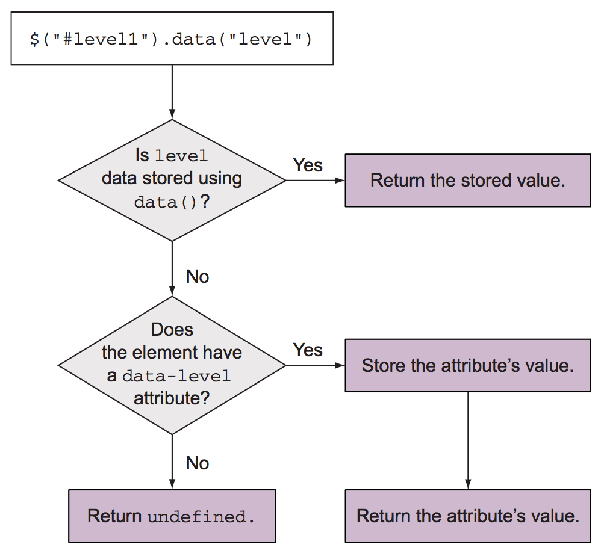

4. Working with properties, attributes, and data
- Getting and setting element attributes
- Working with element properties
- Storing custom data on elements
4.1 Defining element properties and attributes
Свойства (properties) — в JS-объектах, которые представляют DOM-элементы. Могут быть любого типа.
Атрибуты (attributes) — атрибуты HTML-элемента в разметке. Всегда строки.
Атрибуты хранятся в HTMLElement.attributes, свойства — это свойства самого DOM-объекта, или его прототипов (HTMLElement.className, HTMLImageElement.alt). См. вызов showPrototypeChain(img).
Синхронизация значений свойств и атрибутов:
- Происходит в родных (встроенных) атрибутах и свойствах DOM-объекта.
- Не происходит, если родной атрибут в качестве свойства представлен в виде булевого значения (
input[checked]). Как атрибут он будетnullили равен значению (как минимум пустой строке). Атрибут не задан —getAttributeвернетnull, а свойство в любом случае вернетfalse|true. - Не всегда атрибуты равны свойствам, даже если они встроенные и являются строками. Например
srcдля картинки: атрибут — как задано в HTML, свойство — абсолютный урл.
Имена свойств и атрибутов могут отличаться. Свойства в родном DOM API всегда в камелКейсе.
Определить, поддерживает ли браузер атрибут в инпуте:
if ('required' in document.createElement('input')) {
// Attribute supported
}
4.2 Working with attributes
4.2.1 Fetching attribute values
attr(name) — геттер (и сеттер) атрибутов первого элемента в коллекции. Регистронезависимый (по спецификации HTML5).
4.2.2 Setting attribute values
attr(name, value) — сеттер атрибутов для всей коллекции. value — что угодно, что может конвертироваться в строку, в т. ч. функция, которая возвращает значение.
value может быть объектом, чтобы стразу установить много атрибутов:
$('input').attr({
value: '',
title: 'Please enter a value'
});
4.2.3 Removing attributes
removeAttr('name1 name2 ...') — удалить атрибут(-ы) у выборки. Под капотом используется removeAttribute. Удаляет атрибут, но не удаляет соответствующее ему свойство (просто меняет его значение).
4.2.4 Fun with attributes
Пара так себе примеров работы с attr.
4.3 Manipulating element properties
prop — как attr, только для свойств.
removeProp — удалить свойство. Удаляет только одно свойство, в отличие от removeAttr. Если нативное свойство удалить, то им уже нельзя будет пользоваться, так что надо осторожно. Если удалять, то только кастомные.
prop появился после 1.6. Раньше всегда использовали attr. Однако, у элементов есть свойства, для которых нет аналогичных атрибутов. Кроме того, некоторые атрибуты и их аналогичные свойства хранят разные значения (checked, src).
Атрибут checked соотносится со свойством defaultChecked, но не со свойством checked. Поэтому атрибут checked отвечает только за начальное состояние (то, что в HTML). Для динамической работы с чекбоксами надо использовать .prop('checked').
checked, selected — это булевы атрибуты по спецификации HTML. Это значит, что им не обязательно иметь значение. Все примеры сделают чекнутый чекбокс:
<!-- Лучший вариант: -->
<input type="checkbox" checked>
<!-- Это тоже будет работать: -->
<input type="checkbox" checked="checked">
<input type="checkbox" checked="ololo">
<!-- И даже это: -->
<input type="checkbox" checked="false">
4.4 Storing custom data on elements
Часто нужно хранить данные так, чтобы они были доступны разным скриптам, работающим с элементом. Для этого можно создать глобальные переменные, но это плохой вариант: приложение плохо масштабируется, есть риск переопределить переменные, модульность страдает.
data(name, value) — сеттер, позволяет сохранить любые данные в jQuery-коллекции (в каждом элементе). name может быть камелКейсом someName или через дефис (some-name), разницы не будет.
data сохраняет данные в том виде, в котором они передаются. Более того, если в HTML используется data-атрибуты с булевыми значениями, он будут интерпретированы как булевы, а не как строки.
<input id="name" name="name" data-mandatory="true" />
<script>
typeof $('input').data('mandatory') // boolean
typeof $('input').attr('data-mandatory') // string
</script>
data(object) — можно передать объект с пачкой имя/значение для установки на элементах коллекции.
$.data(DOM-element, name, value) — работает над DOM-коллекциями, не над jQuery-объектами.
data([name]) — геттер. Покажет данные из первого элемента коллекции по имени. Если имя не передаем (data()), по вернет объект со всеми сохраненными данными, которые есть.
Алгоритм работы геттера:
- ищем в объекте атрибут, установленный через сеттер, через jQuery. Если находим, возвращаем значение.
- Если не нашли, то ищем соответствующий HTML data-атрибут. С этих пор jQuery эти данные сохраняет у себя в памяти (как будто бы установили сеттером, а не в HTML) и далее
data-*атрибут из HTML не учитывает. - Если ничего не нашли, то возвращаем
undefined.
Схема: 
jQuery 3 хранит ключи data-данных в камелКейсе, раньше хранила как напишешь.
removeData() — затрагивает только внутренние структуры jQuery, установленные сеттерами или при извлечении data-свойств через $(el).data(). Не затрагивает HTML-атрибуты. Можно передавать массив или строку.
При удалении элемента из DOM jQuery сама почистит данные, созданные через data().
Есть так же $.removeData(), которая принимает DOM-элементы.
$.hasData(element) – проверяет, имеется ли в DOM-элементе какие-то сохраненные данные через jQuery.
Вопросы и задания
Опишите особенности DOM-свойств и атрибутов HTML
- Чем отличаются свойства и атрибуты элементов?
- Как они синхронизируются между собой (строки, булевы значения, цифры)?
- Каковы особенности именования атрибутов и соответствующих им свойств?
- Приведите примеры, когда нужно работать с атрибутами, а когда со свойствами?
Что будет и почему
<img src="../pic.png" alt="Picture" id="myPic">
<script>
var img = document.getElementById('myPic');
// Что будет и почему?
console.log(img.src == img.getAttribute('src'));
</script>
Определите поддержку HTML5-атрибута
Как определить, поддерживает ли браузер атрибут draggable у элементов?
4.2 Working with attributes
Добавить alt для картинок
Добавьте картинкам атрибут alt на основании названия файла:
- замените
-на пробел; - первое слово должно начинаться с большой буквы
Пример: ../big-fish.jpg → Big fish.
Картинок может быть произвольное количество, путь к картинкам может быть любой. Существующие альты трогать не нужно.
Шаблон для задачи.
4.3 Manipulating element properties
Как чекнуть чекбокс из JS? Как узнать, чекнут ли чекбокс?
Работа с атрибутом/свойством checked
<input type="checkbox" checked id="myCheckBox">
<script>
var $cb = $('#myCheckBox');
console.log($cb.prop('checked'), $cb.attr('checked'));
$cb.prop('checked', false);
// Что будет и почему?
console.log($cb.prop('checked'), $cb.attr('checked'));
</script>
4.4 Storing custom data on elements
Вопросы
- Какие данные можно сохранять в
data-*атрибутах? - Как jQuery сохраняет и достает данные с помощью
.data()? Опишите алгоритм работы. - Чем отличаются
$.dataи$.fn.data? - Как удалить данные, сохраненные в элементе через
.data()? - Как проверить, имеет ли элемент данные, сохраненные через
.data()?
Что будет и почему
<input type="checkbox" data-url="http://ya.ru" id="myCheckBox">
<script>
var $cb = $('#myCheckBox');
$cb.data('url', 'http://google.com');
// Что будет и почему?
console.log($cb.data('url') == $cb.attr('data-url'));
$cb.removeData('url');
// Что будет и почему?
console.log($cb.attr('data-url'));
</script>